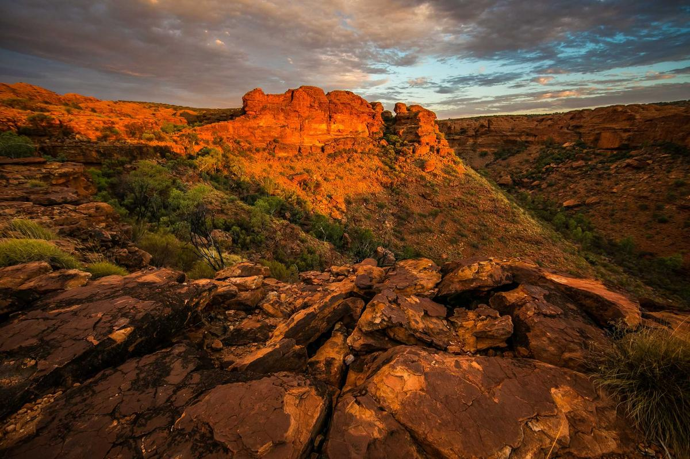

Lord of the street and of the heart, keep us from two false mercies. Keep us from the mercy that will not name the act. Keep us from the anger that will not love the person. Give us truth that still feeds the hungry. Amen.
On Tuesday I preached The Record and the Lane. That sermon was about a public record on a public street and the duty to keep the light without standing in the travel lane. The full text sits at sermon.ahightower.com/lane-record/. If you have not read it, start there. The charge was simple: keep the plate, keep the time stamp, stay out of the path of the steel, and carry the facts to the door that still has authority to act.
Today a public comment arrived under a video. The comment said mental health is the real issue for most of the homeless. It said tickets they cannot pay only add to the problem. It said I should try walking into a bathroom in ripped, smelling clothes and see how far I get. It said I should quit bitching and work toward helping them, or let them stay at my house.
I am an ordained minister. I love every person on these streets, including the person who wrote those words and every person sleeping outside tonight. That is not a slogan. It is a settled fact of my calling. Love for a person does not require me to pretend a citation is cruelty or that public waste is a lifestyle. Love does not require me to hide the written law so the conversation stays soft.
Micah 6:8
No, O people, the Lord has told you what is good, and this is what he requires of you: to do what is right, to love mercy, and to walk humbly with your God.
Do what is right. Love mercy. Walk humbly. All three at once. Not two out of three. The commenter is right that mental illness is real and widespread among people living outside. He is right that many cannot pay a fine. He is right that public bathrooms often refuse a person who looks and smells like street life. Those facts are not in dispute here.
The question is what love does next. Love that only complains about the ticket and never names the act that produced the ticket is not mercy. It is a softer form of abandonment. Love that only offers a house and never offers a path out of the high, the theft, or the public waste is also incomplete. The Gospel does not stop at a couch. The Gospel still calls a man to turn.

Matthew 25:35-40
For I was hungry, and you fed me. I was thirsty, and you gave me a drink. I was a stranger, and you invited me into your home. I was naked, and you gave me clothing. I was sick, and you cared for me. I was in prison, and you visited me. Then these righteous ones will reply, Lord, when did we ever see you hungry and feed you? Or thirsty and give you something to drink? Or a stranger and show you hospitality? Or naked and give you clothing? When did we ever see you sick or in prison and visit you? And the King will say, I tell you the truth, when you did it to one of the least of these my brothers and sisters, you were doing it to me!
Jesus still identifies with the least. Feeding, clothing, and visiting remain commands. They do not cancel the rest of Scripture. They do not cancel the Health and Safety Code that already names possession, influence, waste, and substandard buildings. They do not cancel the duty of a magistrate to keep a street ordered enough that a child can walk it and a business can open its doors.
A ticket a person cannot pay is a blunt instrument. Sometimes it is the only tool left when treatment is refused and the public space is being used as a toilet or a drug market. The better path is the one California voters already wrote into Health and Safety Code section 11395: treatment-mandated felony for hard-drug possession with priors. Elect treatment, finish it, and the charge can be dismissed. Refuse it, and the felony path remains. That is not cruelty. That is a door with teeth. The Gospel offers a still better door that does not wait for two priors.

James 2:14-17
What good is it, dear brothers and sisters, if you say you have faith but don't show it by your actions? Can that kind of faith save anyone? Suppose you see a brother or sister who has no food or clothing, and you say, Good-bye and have a good day; stay warm and eat well, but then you don't give that person any food or clothing. What good does that do? So you see, faith by itself isn't enough. Unless it produces good deeds, it is dead and useless.
Faith without deeds is dead. Deeds without truth are also dead. Saying stay warm while you refuse to name the addiction, the theft, or the public defecation is the same empty blessing James condemns. Real help includes food, clothing, treatment, and the clear word that the conduct has a name and a cost. Real help includes the Gospel that can give a new heart before any cell door closes.
The bathroom question is fair. Many businesses will not open the restroom to a person who has not bought anything and who looks like street life. That is not always hardness of heart. It is often the residue of earlier damage: drugs left in the stall, needles, human waste, threats to staff. The answer is not to pretend those events never happened. The answer is enough public facilities that are staffed, cleaned, and ordered, and enough enforcement that the private restroom is not the only remaining option. Mercy that refuses to face the reason the door stays locked is not mercy. It is theater.
As for the invitation to let them stay at my house: I have housed people before. Many of us have. That personal act does not replace the public duty of the city to keep streets, parks, and commercial corridors from becoming open-air wards. One private couch cannot absorb a system that has renamed crime as status and then expressed surprise when the status multiplies.
Ephesians 5:11-13
Take no part in the worthless deeds of evil and darkness; instead, expose them. It is shameful even to talk about the things that ungodly people do in secret. But their evil intentions will be exposed when the light shines on them.
Expose them. Name the section. Name the addiction. Name the waste. Then offer the treatment door and the Gospel door. Do not join the darkness by softening the name until no one can be helped. Do not join the darkness by treating a public comment thread as a place for uncontrolled rage either. The language in the original comment is not appropriate for a public conversation that hopes to move anyone toward help. I say that as a minister who still loves the speaker. Control of the tongue is part of love for neighbor.
Romans 13:3-4
For the authorities do not strike fear in people who are doing right, but in those who are doing wrong. Would you like to live without fear of the authorities? Do what is right, and they will honor you. The authorities are God's servants, sent for your good. But if you are doing wrong, of course you should be afraid, for they have the power to punish you. They are God's servants, sent for the very purpose of punishing those who do what is wrong.
Paul does not baptize every badge. He names the office. The office exists so that people doing right can live without fear and people doing wrong can feel the pressure to stop. When a city treats open drug use, public waste, and chronic theft as housing status instead of violations, the office has left its post. Restoring the office is not the opposite of mercy. It is one of the conditions that make real mercy possible for the person who is still reachable.
I will not quit speaking about the street. I will not quit loving the people on it. Those two statements are not in conflict. True mercy names the act, offers the door, and keeps the record. Soft lies help no one. Rage that refuses to control itself helps no one either. The Lord still requires us to do what is right, to love mercy, and to walk humbly. All three. On the same day. On the same street.
If you are the person who wrote the comment, I am glad you spoke. I am an ordained minister. I love you. I ask you to bring the same heat to the actual work of treatment, order, and the Gospel, and to leave the uncontrolled language behind. If you are sleeping outside tonight, the same Word that names your conduct still offers you a new heart. Come. The door is still open.
In the name of the Father, and of the Son, the Lord Jesus Christ. Amen.
Sources
- Tuesday sermon: "The Record and the Lane," September 15, 2026, sermon.ahightower.com/lane-record/.
- Prior sermon on Health and Safety Code section 11395: "Take Your Pick," September 12, 2026, sermon.ahightower.com/turn-live/.
- Prior sermon on the wider code: "The Code Already Named It," September 14, 2026, sermon.ahightower.com/named-code/.
- California Health and Safety Code sections 11350, 11364, 11377, 11395, 11550, 17920.3, and 5411. Section 11395 added by Proposition 36 (2024).
- Scripture quotations are from the New Living Translation.
Photographs
- Public exterior photographs used to illustrate local stewardship, the public street, and the seat of broader authority. Captions describe their role in the argument. No private residences. No generated people.